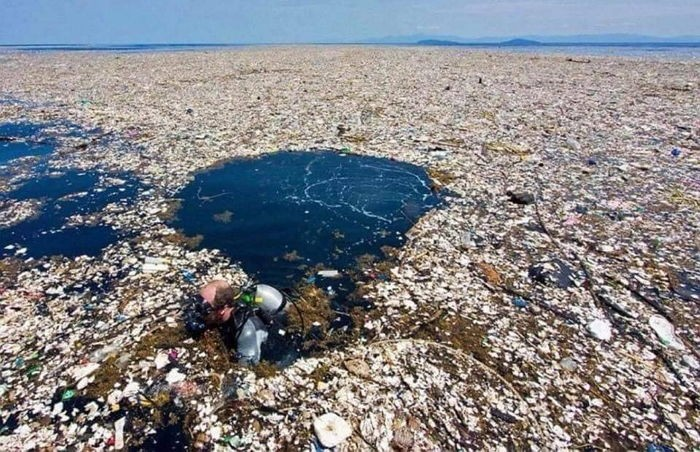
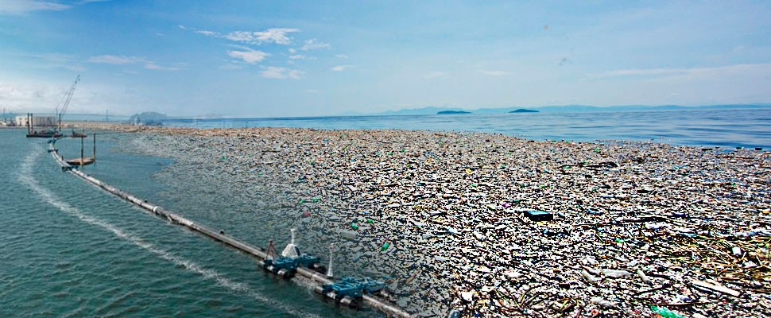
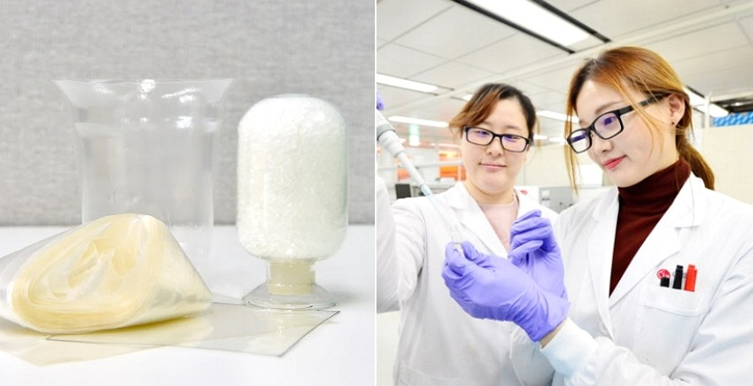

플라스틱(Plastic)은 우리 주변에서 흔히 사용되고 접할 수 있는 물질이다.
플라스틱의 정의에 대해 간단히 말해보자면 열과 압력을 가했을때 모양이 변하고 열과 압력이 사라진 후에도 모양이
유지되는 물질이다. 껌, 성형수술(Plastic surgery), 플라스틱 병 등등 많은 곳에 이용된다.
그러나 많은 이들이 알고있듯 1950년대 이후 플라스틱 사용량이 급증하면서 플라스틱 폐기물 양또한 급증하게 되었다.
뿐만아니라 대부분의 플라스틱이 미생물이 분해할 수 없는 화학 구조를 가지고 있기 때문에 자연 분해 기간이
기하 급수적으로 늘어나게 되버렸다. 그 예로 분해기간에 대해 말해보자면, 스티로폼 컵은 50년, 일회용 기저귀는
450년, 낚시줄은 600년이걸린다. 대부분의 플라스틱 평균 분해 기간은 500년 이상으로 추정되는 것이다.
이런 현상으로 도시에 쓰레기들이 쌓이면서 바다에까지 쓰레기가 흘러가게 되었는데 이로 인해 생긴 유명한 섬이 있다.
태평양에 위치해 있는 쓰레기 섬(Great Pacific Garbage Patch)이다.
 The Great Pacific Garbage Patch
1997년 처음 발견된 이 섬은 현재 한반도의15배 가까이 이르게 되었다. 이 쓰레기 섬의 90%가 플라스틱이며
주변 어류 35%의 뱃속에서 작은 플라스틱이 들어있다고 알려졌다. 유엔환경계획(UNEP)이 2016년에 발표한 보고서
<해양 플라스틱 쓰레기와 미세 플라스틱>에 따르면 2050년 바다에 물고기와 쓰레기의 비율이 50대 50이 될 것이라
예측하였다.
 생분해성 신소재 LG 화학
이를 통해 현재 플라스틱으로 인한 환경오염이 매우 심각한 사태임을 알 수 있다. 그러나 최근 이와 관련하여
희망적인 발표가 나왔다. LG 화학이 세계 최초로 합성수지와 동등한 기계적 물성 구현이 가능한 생분해성
신소재 개발에 성공한 것이다. 이 신소재 플라스틱은 넉달 후 썩기시작하여 분해기간을 앞당길 수 있다.
생분해성 소재는 현재 음식물 포장 필름과 용기 등에 광범위하게 사용되고 있다. 기존 생분해성 소재는 유연성과
물성을 강화하기 위해 다른 플라스틱 소재 첨가제를 섞어야 했지만, LG화학이 개발한 생분해성 신소재는 옥수수 성분의
포도당 및 폐글리세롤을 활용한 바이오 함량100%라는 부분이 차별화된 부분이다. 또한 폴리프로필렌(PP)1등의
합성수지와 동등한 성질과 투명성을 구현할 수 있는 전 세계 유일한 소재이기도하다.
이는 2025년 본격적 양산될 계획이다.
후에 유용한 신소재들이 많이 개발되어 환경보존을 위한 길이 하루빨리 앞당겨지기를 바라는 바람이다.
1) 성형용으로 많이 사용되며 병과 용기 등이 만들어진다. 현재 있는 플라스틱 중 가장 가볍다.
탄소와 수소로만 이루어진 안정된 PP는 그린피스가 환경호르몬으로부터 자유롭고 재활용이 가능해
'미래의 자원'으로 분류되있다.